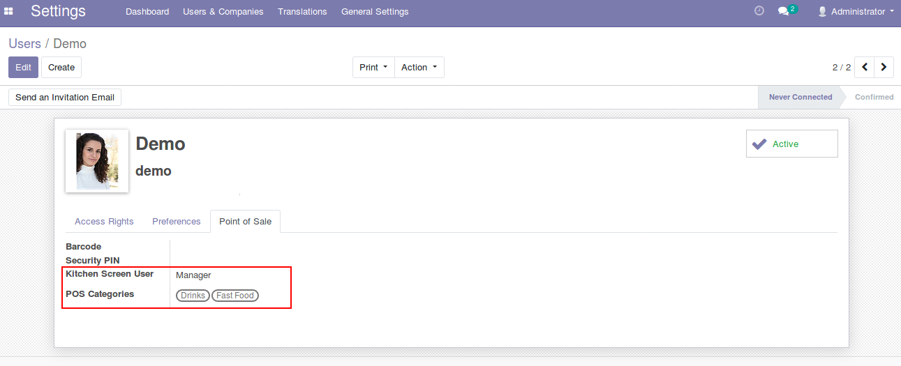
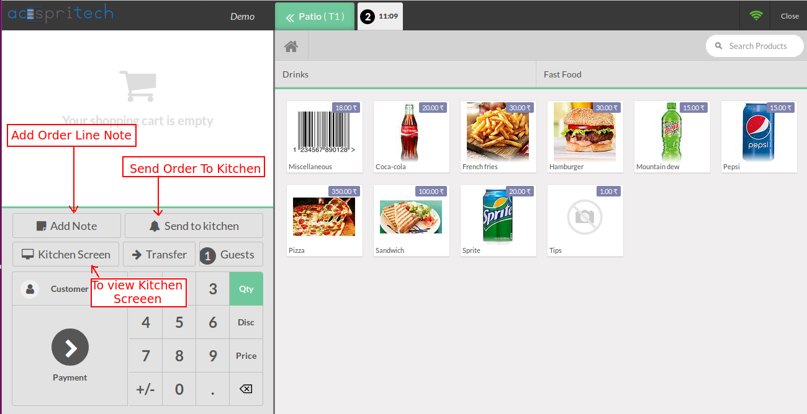
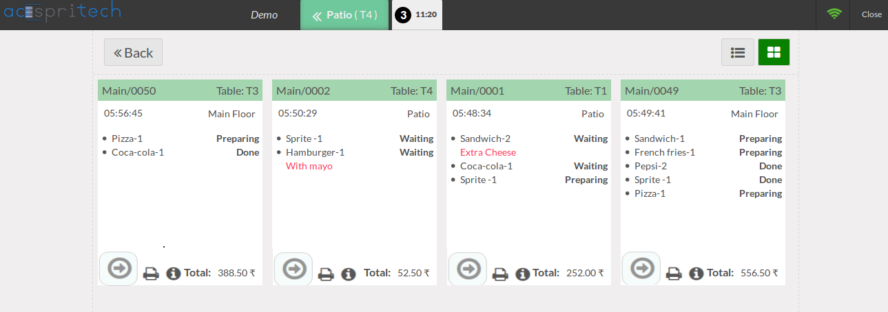
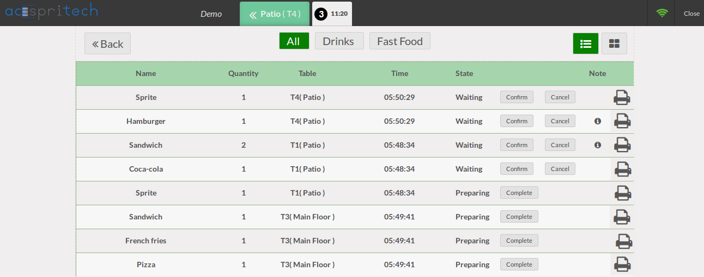
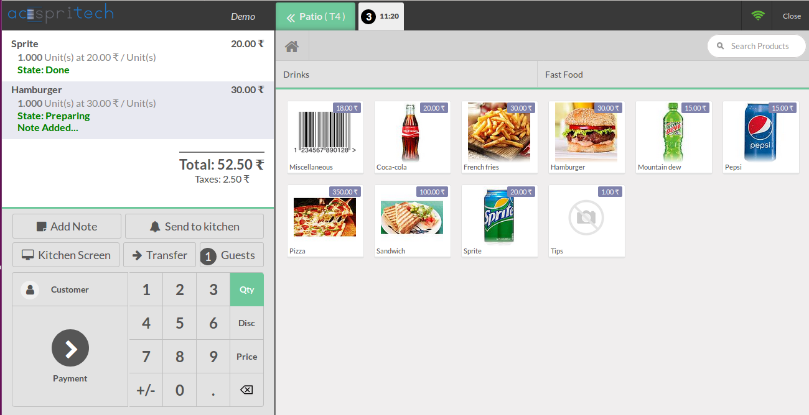
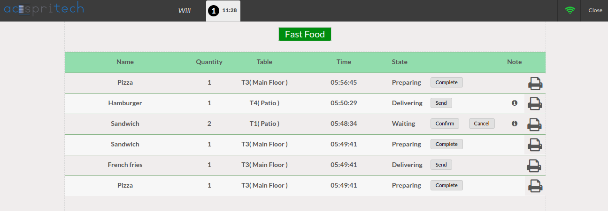

Note: This module is tested and working in Odoo community edition but not tested in Enterprise version. And we are supporting Ubuntu OS and not Windows OS.
Features
- Kitchen screen is for staff to see order that has been placed.
- It will also show particular table orders.
- Kitchen screen has two user category: Cook and Manager.
- Cook can only see and update order of specified categories.
- Manger can see all categories orders and table orders.
- Manager and cook user can print receipt from listview and kanban view (Via Posbox Thermal Print).
- Manager can change kitchen state based on order and product wise.
To enable kitchen screen view, here is the configuration.
You can set kitchen screen user as cook or manger and assign categories by which you can give right to see order that belongs to given category.
Separate pos should be configured for the cook user.

Send to kitchen button can be used for table service.
For counter service simply place order and it will be send to kitchen.
Add note button is used to write a note on particular order line.
If user is manager kitchen screen button will be visible.

Manager can see screen that is shown below by clicking kitchen screen button.
You can see order note below the order in red line.
By clicking on information icon you can see table order note.

Manger can also see list view of orders and also have filtration buttons of specified categories in settings.

For table service restaurants, order will be saved in cart and you can see the order status.

we can see a screen shown below when cook will log in.
As per order progress, cook can update state.

Release Notes
Release Update - December 23, 2019 Version - 1.0.0
Load Orders in Cook Screen
NOTE: We give 60 days support for our customers.
Before trying in your live db, please ask us to provide you for test link.
If any other custom modules are installed and because of that some errors occurs then we charge extra.